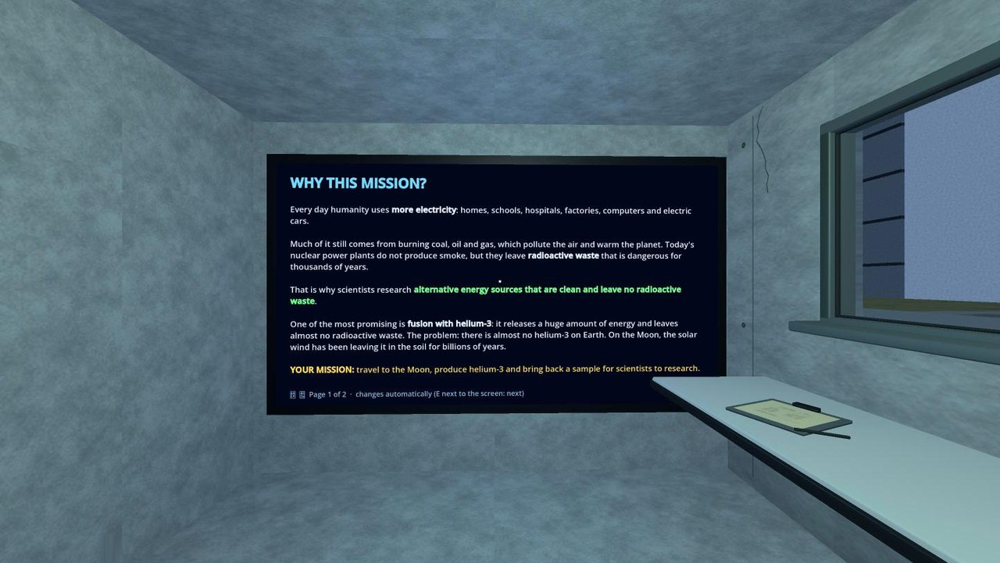
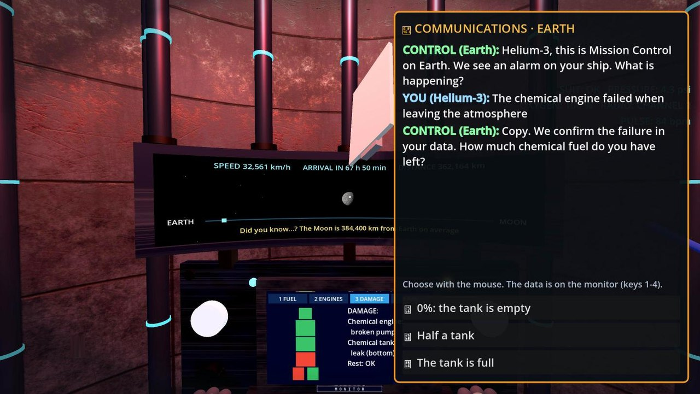
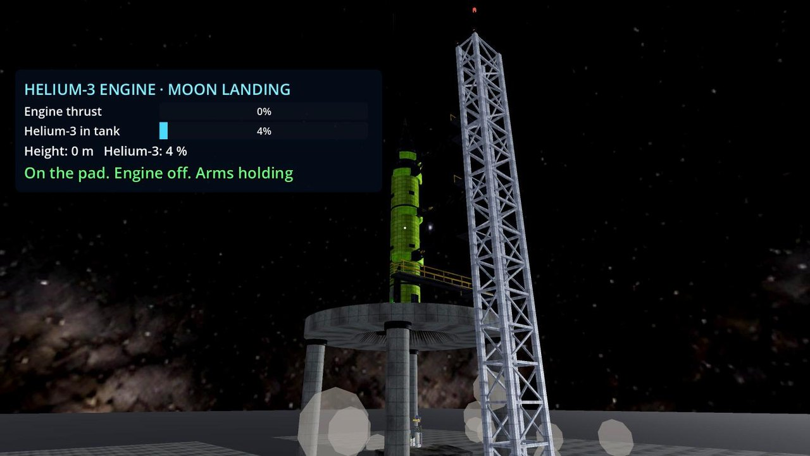
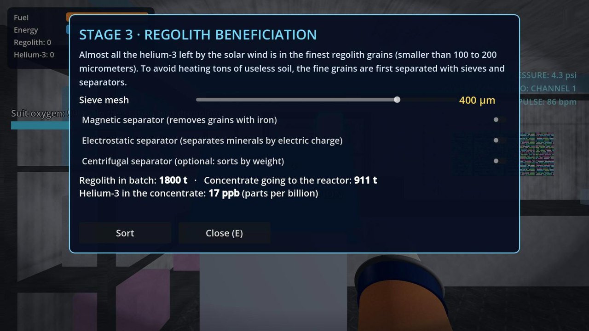

Fase 1
La base y el despegue
El jugador empieza en la sala de control de la base, frente a una pantalla que explica el problema de la energía y el plan de la misión. Sale, camina hasta la plataforma de lanzamiento, sube la escalera de la torre (15 m) y entra a la nave. Empieza la cuenta atrás: los brazos de la torre sueltan el cohete y despega con el motor químico de llama azul.

Fase 2
El viaje y la falla
Al salir de la atmósfera el motor químico falla. En la cabina, con objetos flotando por la gravedad cero, el jugador habla con Control de Misión en la Tierra eligiendo respuestas y revisa el monitor (combustible, motores, daños y navegación) para dar los datos correctos. La nave sigue solo con el motor de plasma de helio-3, que alcanza para llegar pero no para volver.

Fase 3
Alunizaje y exploración
La nave aluniza sobre una plataforma frenando con el motor de helio-3, y los brazos la sujetan. El astronauta baja la escalera y recorre la superficie lunar bajo un cielo de estrellas, con gravedad de 1,62 m/s². El oxígeno del traje empieza a bajar: hay que volver a la estación a recargarlo.

Fase 4
Minería y producción de helio-3
Con el vehículo extractor el jugador excava regolito entre 50 rocas. Algunas son basalto duro sin helio-3, y el vehículo las descarta al analizarlas. El regolito se lleva a la tolva del reactor y después, en las salas de la estación lunar, el jugador opera cada etapa del proceso real en su consola. La nave necesita entre 15 y 20 cápsulas, un número que cambia en cada partida.

Fase 5
Despegue lunar y regreso
Con la nave cargada, el astronauta sube la escalera y despega de la Luna: el motor de helio-3 va al límite, pero alcanza la velocidad de escape de 2,38 km/s. La nave vuelve y aterriza en la plataforma de la base de la Tierra.

Final
Misión cumplida
De vuelta en la sala, la pantalla muestra el resultado: las cápsulas traídas, el helio-3 que quedó en el tanque y que el combustible de helio-3 sobrante se usará en investigaciones energéticas para desarrollar energía limpia de fusión. Después aparecen los créditos del equipo.